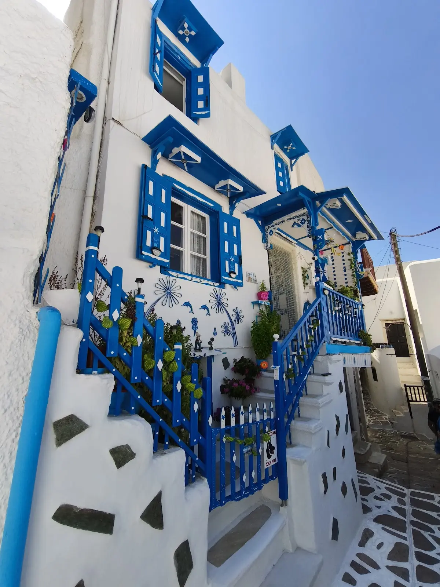

01
08:00

Low sun · empty lanesBourgos · the Old Market
Ext. narrow lanes — early morning
The Greek quarter spreading around and below the castle walls; the name is the Italian borgo [18]. A maze of lanes, shops and tavernas — marble underfoot, arches overhead, staircases into courtyards into more staircases [20].